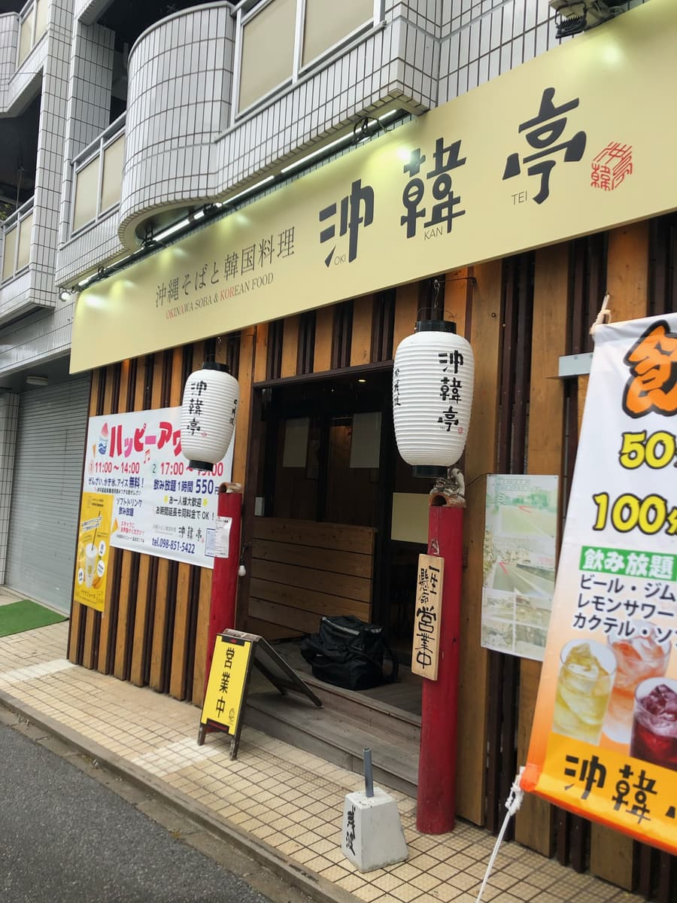
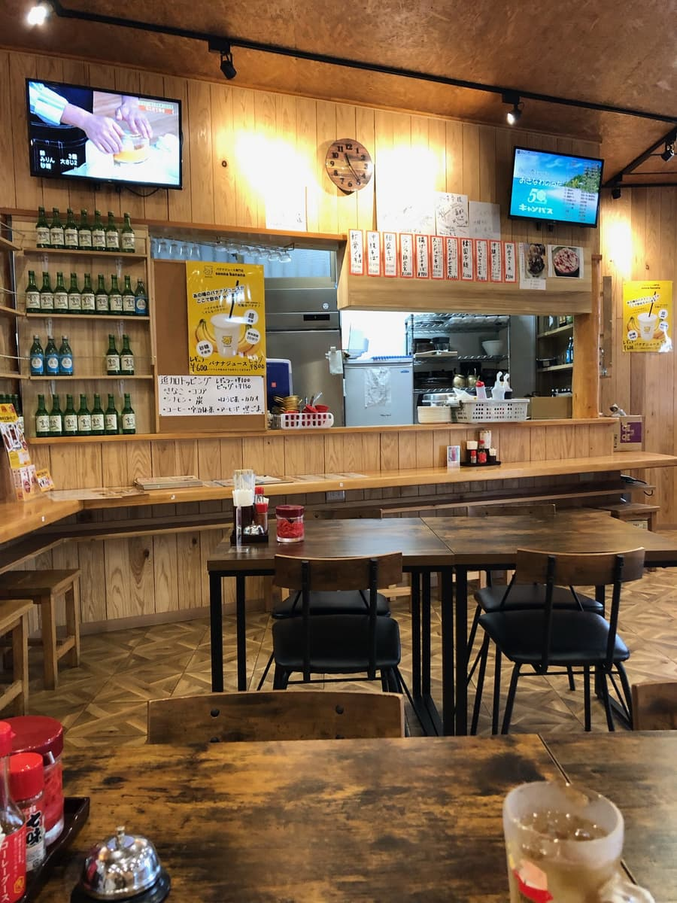
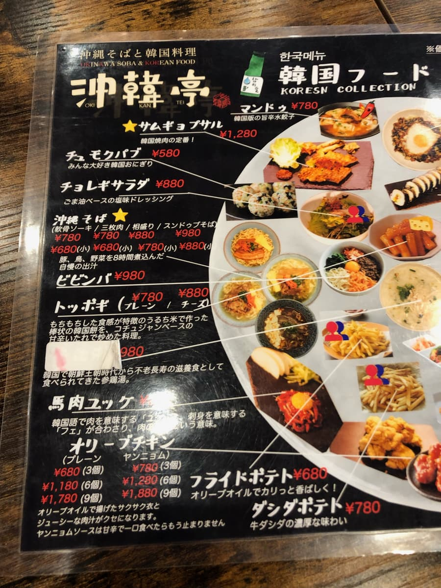
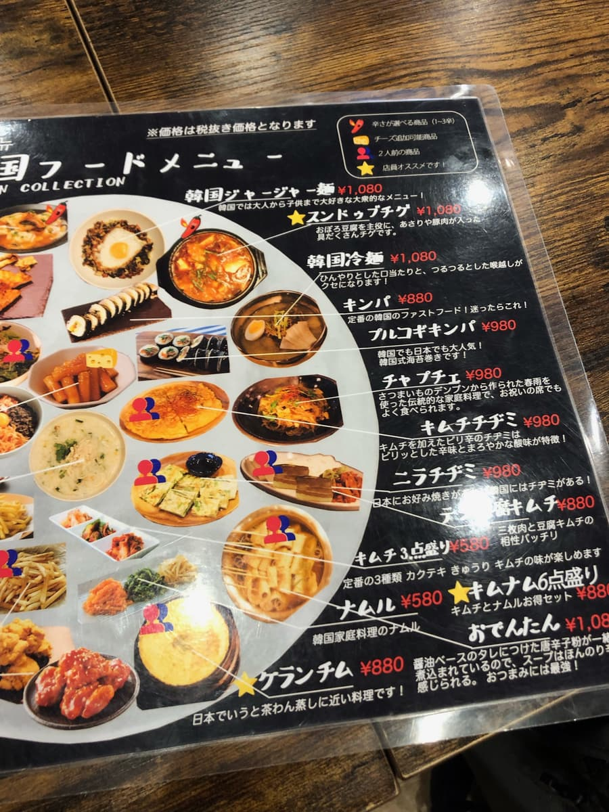
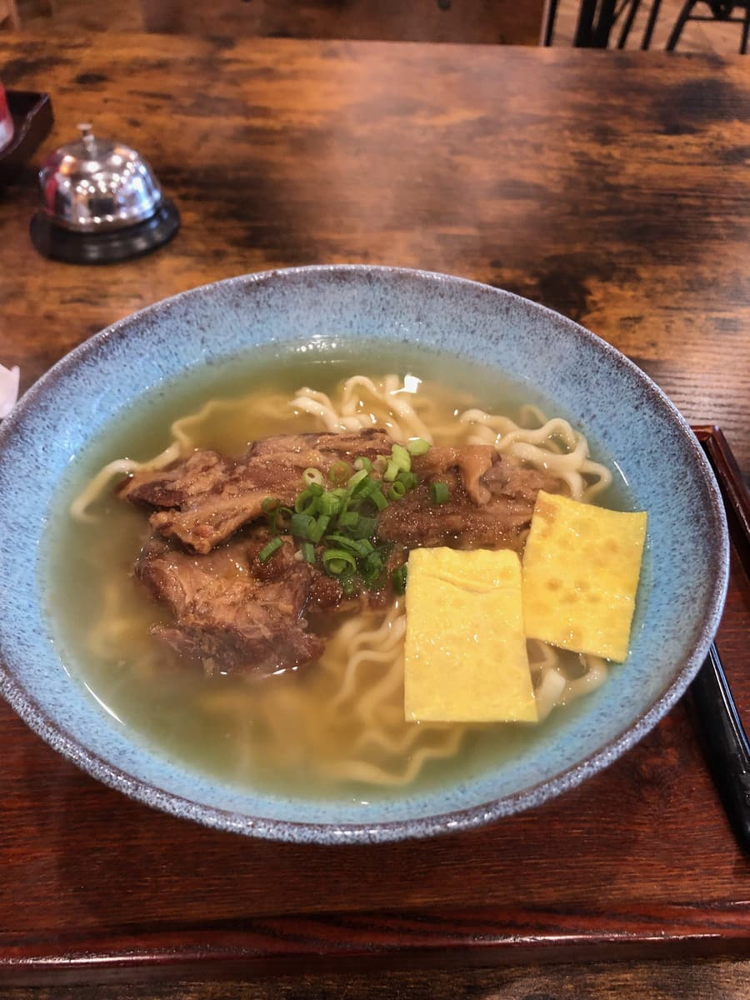
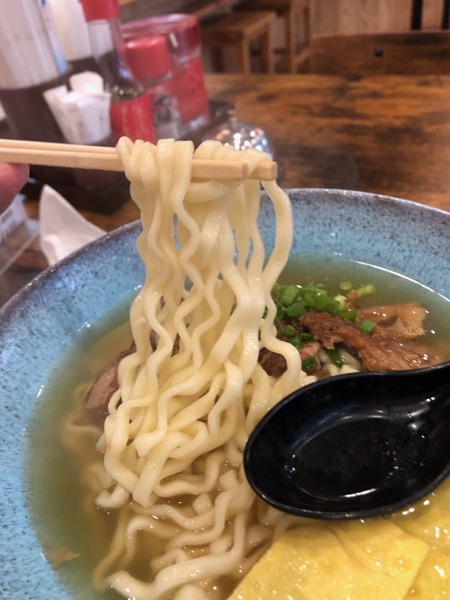

2023年12月吃的。这家店是「第13届冲绳面集章活动（2023.10.1～2024.2.29）」的参加店，是我去的第28家／共34家😊

这家店从店名和招牌都看得出来是韩国料理店，不知为何却也有冲绳面(^0^;) 这种店我还是第一次体验😁



菜单果然几乎都是以韩国料理为主，但不知为何突然冒出了冲绳面的菜单呢😄
这次点了集章手册上介绍的「软骨排骨面」。

先喝汤。感觉很温和，一边品尝一边想着是不是柴鱼为底的高汤？后来看了集章活动的说明文字，上面写着「请品尝以猪肉、鸡肉、蔬菜熬煮10小时的高汤」(^0^;)。
「难道是鸡骨高汤？」我顿时失去了信心(^0^;) 舌头不够灵敏，真是抱歉(^0^;) 不过喝汤的时候我觉得是柴鱼味，所以也许也有加柴鱼高汤。抱歉，我没有自信(^0^;)

接着吃面。是中粗的卷面，面条偏软。
配料的软骨排骨算是满大块的，炖得软嫩入口即化。
就是很普通的好吃😆
评分（9分/15分）：就是很普通的好吃。清爽系的温和高汤，加上软嫩入口即化的软骨排骨，很美味。另外停车场在店面后方，但看起来车位不多。我上网查到好像把车停在附近的收费停车场也能免费，但我不知道附近哪里有投币式停车场。
面：★★★☆☆（3）
汤头：★★★☆☆（3）
配料：★★★☆☆（3）